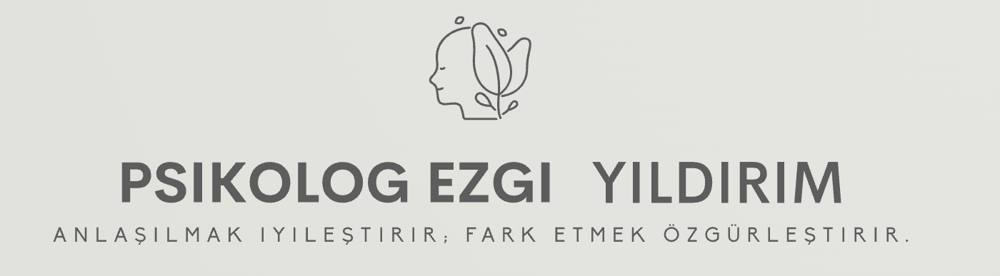
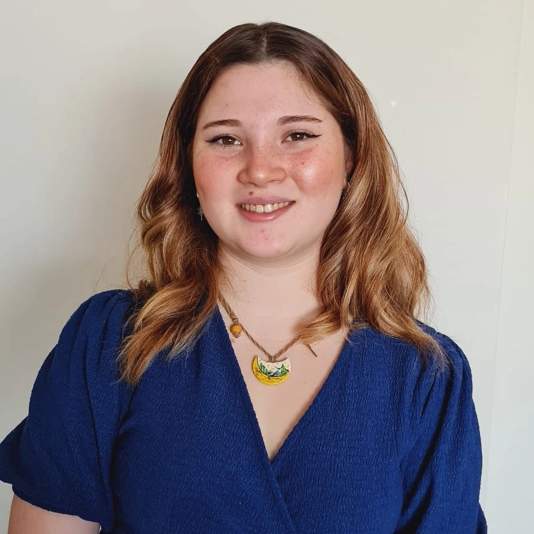

Ben Psikolog Ezgi Yıldırım. İçsel yolculuğunuzda size rehberlik etmek, zorlandığınız anlarda kendi potansiyelinizi yeniden keşfetmenize destek olmak için buradayım.
Hemen Randevu AlKaygı, stres, depresyon, travma, ilişki problemleri, panik atak, öfke kontrol sorunları, iletişim becerileri, özgüven süreçleri ve daha fazlası için yanınızdayım.
Çocuk ve ergenlerin duygusal, davranışsal ve gelişimsel süreçlerine destek, ailelere rehberlik sağlıyorum.
Doğal afet ve zorlu yaşam olaylarından sonra psikososyal destek süreçlerini yönetiyorum.
Yaratıcı dışavurumla iç dünyanızı keşfedin.
Sınav süreci, motivasyon ve akademik planlama konularında yanınızdayım.
WhatsApp üzerinden iletişime geçerek ilk görüşmemizi planlıyoruz.
Size en uygun çalışma yöntemini (sanat terapisi, bireysel vb.) belirliyoruz.
Güvenli ve yargısız bir alanda iyileşme yolculuğuna devam ediyoruz.
Bireysel danışmanlık seansları ortalama 50 dakika sürer.
Evet, görüşmelerimizi güvenli online platformlar üzerinden gerçekleştirebiliyoruz.